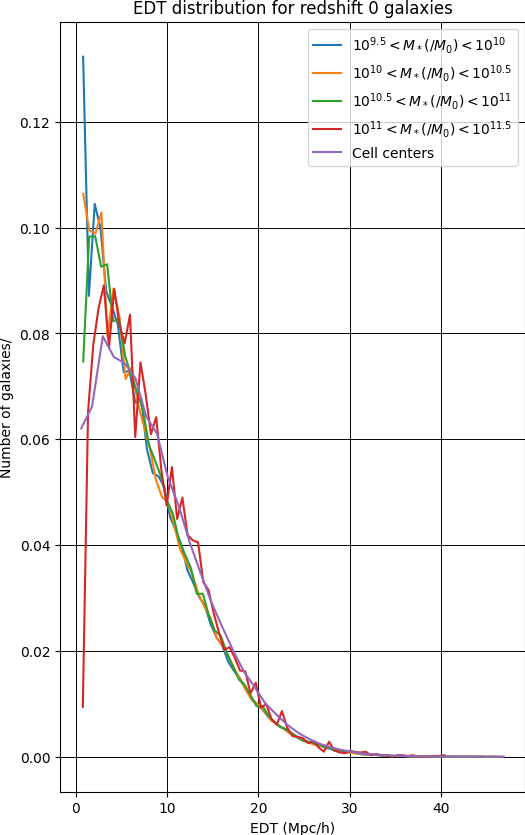
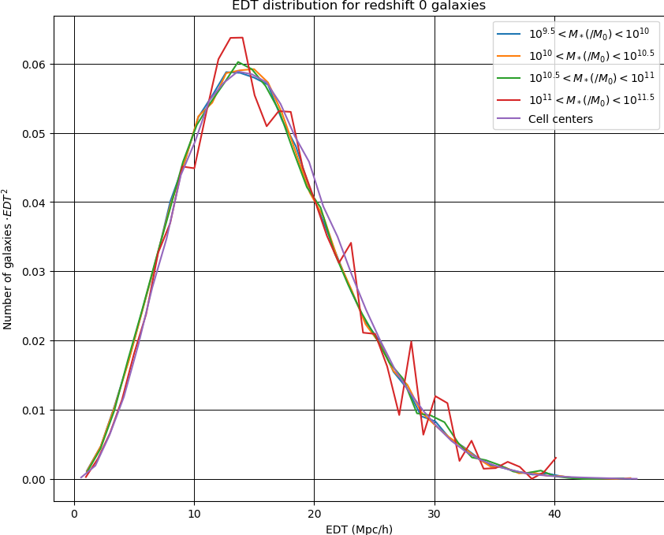
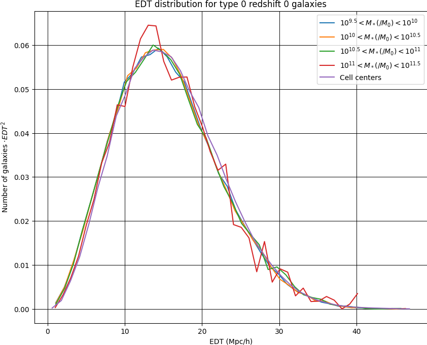

A reproduction of figure 8 from the paper at \(\rho_{thresh} = 5.01\left < \rho \right>\) A slice through the MS showing (in black) the percolating object for \(\rho_{thresh} = 5.01\left < \rho \right>\), and (in blue) the Euclidean distance transform (EDT)
which gives the minimum 3D distance from each point to the percolating object. In red are the type 0 galaxies (with stellar mass \( > 10^{8.5}M_0\)) from a 1 Mpc/h slice about X = 318 Mpc/h overlaid on the previous image. A slice through the MS showing (in black) the percolating object for \(\rho_{thresh} = 5.01\left < \rho \right>\), and (in blue) the Euclidean distance transform (EDT)
which gives the minimum 3D distance from each point to the percolating object. In red are the type 1 galaxies (with stellar mass \( > 10^{8.5}M_0\)) from a 1 Mpc/h slice about X = 318 Mpc/h overlaid on the previous image. A slice through the MS showing (in black) the percolating object for \(\rho_{thresh} = 5.01\left < \rho \right>\), and (in blue) the Euclidean distance transform (EDT)
which gives the minimum 3D distance from each point to the percolating object. In red are the type 2 galaxies (with stellar mass \( > 10^{8.5}M_0\)) from a 1 Mpc/h slice about X = 318 Mpc/h overlaid on the previous image.A normalized distribution of Euclidean Distance Transform for redshift 0 galaxies that are not a part of the Cosmic Web.

A normalized distribution of Euclidean Distance Transform for type 0 redshift 0 galaxies that are not a part of the Cosmic Web.


Cumulative area under EDT distrbution (for redshift 0 galaxies not a part of the Cosmic Web) plotted as a function of EDT.Cumulative area under EDT distrbution (for redshift 0 galaxies not a part of the Cosmic Web) plotted as a function of EDT.